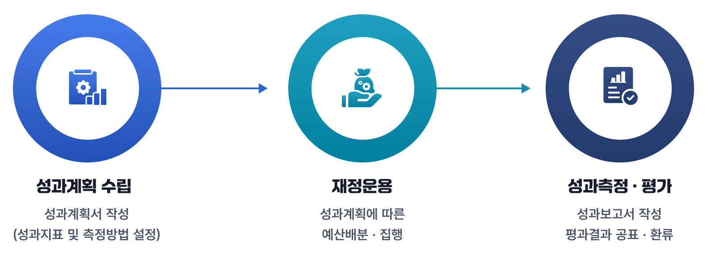
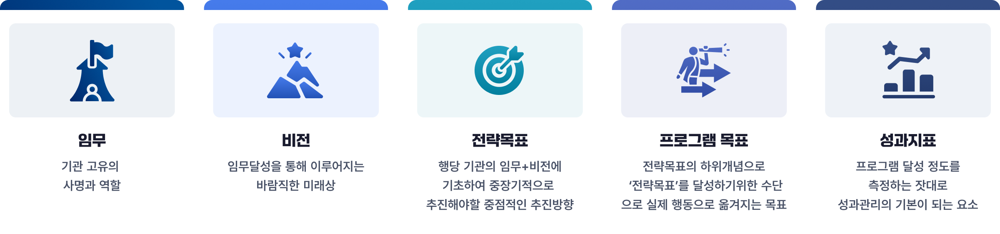

재정제도
1. 성과관리제도란?
성과관리제도는 정부가 재정사업의 목표를 세우고 그 결과를 평가해 다음 예산에 반영하도록 하여, 정부예산을 효율적으로 사용하여 성과를 낼 수 있도록 하고, 운영자의 책임을 중시하도록 고안된 제도입니다.
-
「성과목표관리」 는 임무→비전→전략목표→프로그램목표→성과지표 체계로 관리하며, 예산과 성과를 연계합니다.
성과목표관리 바로가기 -
「핵심재정사업 성과관리」 는 핵심재정사업(군)을 선정하여 全주기적 밀착·집중 관리를 통해 가시적 성과 창출을 목표로 하는 성과관리 제도입니다.
핵심 재정사업 성과관리 바로가기 -
「재정사업 자율평가 결과」 는 평점·등급으로 제공되며, 등급이 낮은 사업은 예산 삭감 및 제도개선 대상이 됩니다.
재정사업평가 결과 바로가기
2. 재정성과목표관리 기본구조
각 기관의 임무·전략목표와 연계된 프로그램 목표 및 이를 측정할 수 있는 성과지표를 사전에 설정하고 성과 달성여부를 확인·점검·평가하여 그 결과를 다음 연도 예산 편성과 정책 개선에 다시 활용합니다
재정성과목표관리 기본구조

3. 재정성과목표관리를 위한 성과목표체계
재정성과목표관리를 위한 성과목표체계

4. 재정성과정보 공개현황
재정성과정보는 모두의재정 등 여러 웹사이트에서 공개하고 있습니다.
-
성과계획서·보고서, 재정사업 자율평가, 기금운용평가는 모두의재정에서 최종보고서(한글 또는 PDF 파일) 공개
예)결산 정보는 Excel 등 사용자 필요에 따라 정보를 가공·분석할 수 있는 형태로 제공되고 있으나 성과정보는 한글이나 PDF 형태로 제공
- 보조사업평가는 e나라도움에서 사업별 최종 평가보고서(PDF) 공개
-
R&D 평가는 NTIS 시스템에서 사업별 평가결과를 DB화하여 인포그래픽 등과 함께 공개(사업별 최종보고서도 함께 공개)
*평가연도, 부처명, 사업명, 자체/상위/특정/종료/추적 평가 등급(우수·보통·미흡 등)
- 재난안전, 일자리 사업평가 등은 사업별 평가결과는 미공개하고 부처 홈페이지에서 보도자료를 공개